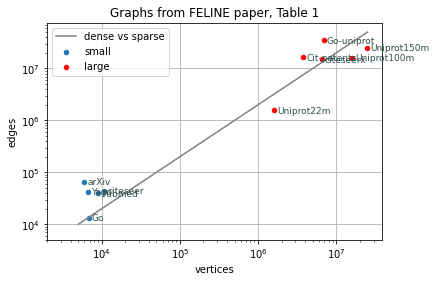

import numpy as np
import pandas as pd
import matplotlib.pyplot as pltGraph datasets
Various real-life large graphs and their characteristics used in Related works
Imports SciPy modules and matplotlib
Other imports
import ioDatasets from FELINE (table_fel)
“Reachability Queries in Very Large Graphs: A Fast Refined Online Search Approach” (2014)
http://openprocedings.org/EDBT/2014/paper_166.pdf
- vertices - \(|V|\), number of vertices / nodes in the graph
- edges - \(|E|\), number of edges in the graph
- Cluster-coeff - clustering coefficient
- Eff-diameter - effective diameter (or effective eccentricity) is an estimated size of the path in which 90% of all pairs of vertices connected are reachable from each other
- roots - number of roots, nodes with no incoming edges, vertices with no predecessors (sources)
- leafs - number of leafs, nodes with no outgoing edges (sinks)
The FELINE paper authors used the SNAP software <snap.stanford.edu/snap/> to compute these values
#@title Table 1: Datasets from FELINE (table_fel) { form-width: "25%" }
csv=u"""Graph;vertices;edges;Cluster coeff.;Eff. diameter;roots;leafs
arXiv;6000;66707;0.35;5.48;961;624
Yago;6642;42392;0.24;6.57;5176;263
Go;6793;13361;0.07;10.92;64;3087
Pubmed;9000;40028;0.10;6.32;2609;4702
citeseer;10720;44258;0.28;8.36;4572;1868
Uniprot22m;1595444;1595442;0.00;3.3;1556157;1
Cit-patents;3774768;16518047;0.09;10.5;515785;1685423
citeseerx;6540401;15011260;0.06;8.4;567149;5740710
Go-uniprot;6967956;34770235;0.00;4.8;6945721;4
Uniprot100m;16087295;16087293;0.00;4.1;14598959;1
Uniprot150m;25037600;25037598;0.00;4.4;21650056;1
"""
csv_stream = io.StringIO(csv)
table_fel=pd.read_csv(csv_stream,sep=';',index_col=0)
table_fel.insert(loc=2,column='edges[% V^2]',
value=100.0*(table_fel['edges']/(table_fel['vertices']**2)))
table_fel.insert(loc=3,column='edges/vertices',
value=table_fel['edges']/table_fel['vertices'])
table_fel| vertices | edges | edges[% V^2] | edges/vertices | Cluster coeff. | Eff. diameter | roots | leafs | |
|---|---|---|---|---|---|---|---|---|
| Graph | ||||||||
| arXiv | 6000 | 66707 | 0.185297 | 11.117833 | 0.35 | 5.48 | 961 | 624 |
| Yago | 6642 | 42392 | 0.096092 | 6.382415 | 0.24 | 6.57 | 5176 | 263 |
| Go | 6793 | 13361 | 0.028954 | 1.966878 | 0.07 | 10.92 | 64 | 3087 |
| Pubmed | 9000 | 40028 | 0.049417 | 4.447556 | 0.10 | 6.32 | 2609 | 4702 |
| citeseer | 10720 | 44258 | 0.038513 | 4.128545 | 0.28 | 8.36 | 4572 | 1868 |
| Uniprot22m | 1595444 | 1595442 | 0.000063 | 0.999999 | 0.00 | 3.30 | 1556157 | 1 |
| Cit-patents | 3774768 | 16518047 | 0.000116 | 4.375911 | 0.09 | 10.50 | 515785 | 1685423 |
| citeseerx | 6540401 | 15011260 | 0.000035 | 2.295159 | 0.06 | 8.40 | 567149 | 5740710 |
| Go-uniprot | 6967956 | 34770235 | 0.000072 | 4.990019 | 0.00 | 4.80 | 6945721 | 4 |
| Uniprot100m | 16087295 | 16087293 | 0.000006 | 1.000000 | 0.00 | 4.10 | 14598959 | 1 |
| Uniprot150m | 25037600 | 25037598 | 0.000004 | 1.000000 | 0.00 | 4.40 | 21650056 | 1 |
ee=np.geomspace(5000,25000000,num=10)
ax=table_fel[table_fel['vertices'] < 100000].plot.scatter(x='vertices',y='edges',
logx=True,logy=True,
grid=True,label='small',
title='Graphs from FELINE paper, Table 1')
ax=table_fel[table_fel['vertices'] >= 100000].plot.scatter(ax=ax,x='vertices',y='edges',
logx=True,logy=True,
grid=True,c='red',label='large',
title='Graphs from FELINE paper, Table 1')
ax.plot(ee,2*ee,'-',label='dense vs sparse',c='gray')
for row in table_fel.itertuples():
ax.annotate(row[0], xy=(row.vertices,row.edges),
xytext=(3,-3), textcoords='offset points',horizontalalignment='left',
family='sans-serif', fontsize=9, color='darkslategrey')
ax.set_xlim(left =2e3)
ax.set_ylim(bottom=5e3)
plt.legend(loc='upper left')
#plt.savefig('feline_graphs_vertices_vs_edges.pdf')
plt.show()
ax=table_fel[table_fel['vertices'] < 100000].plot.scatter(x='roots',y='leafs',
logx=True,logy=True,
grid=True,label='small',
title='Graphs from FELINE paper, Table 1')
ax=table_fel[table_fel['vertices'] >= 100000].plot.scatter(ax=ax,x='roots',y='leafs',
logx=True,logy=True,
grid=True,c='red',label='large',
title='Graphs from FELINE paper, Table 1')
for row in table_fel.itertuples():
ax.annotate(row[0], xy=(row.roots,row.leafs),
xytext=(-3,-3), textcoords='offset points',horizontalalignment='right',
family='sans-serif', fontsize=9, color='darkslategrey')
plt.show()Datasets from FERRARI (table_fer)
“FERRARI: Flexible and Efficient Reachability Range Assignment for Graph Indexing” (2013)
http://citeseerx.ist.psu.edu/viewdoc/download?doi=10.1.1.365.2894&rep=rep1&type=pdf
- \(|V|\) - number of vertices (nodes)
- \(|E|\) - number of edges
- \(|V_C|\), \(|E_C|\) - number of, respectively, vertices and edges in the condensed graph, where maximial strongly connected components were collapsed into “supernodes”, i.e. directed acyclic graph (DAG) created from given graph
#@title Table 1: Datasets Used from FERRARI (table_fer) { form-width: "25%" }
csv=u"""Graph;type;vertices;edges
arXiv;small, dense;6000;66707
Go;small, dense;6793;13361
Pubmed;small, dense;9000;40028
Human;small, sparse;38811;39816
citeseer;large;693947;312383
Cit-patents;large;3774768;16518047
citeseerx;large;6540401;15011260
Go-uniprot;large;6967956;34770235
GovWild;RDF;80222880;23652610
Yago2;RDF;16375503;25908132
Twitter;social network;18121168;18359487
Web-UK;web graph;22753644;38184039
"""
csv_stream = io.StringIO(csv)
table_fer=pd.read_csv(csv_stream,sep=';',index_col=0)
table_fer.insert(loc=3,column='edges/vertices',
value=table_fer['edges']/table_fer['vertices'])
table_fer| type | vertices | edges | edges/vertices | |
|---|---|---|---|---|
| Graph | ||||
| arXiv | small, dense | 6000 | 66707 | 11.117833 |
| Go | small, dense | 6793 | 13361 | 1.966878 |
| Pubmed | small, dense | 9000 | 40028 | 4.447556 |
| Human | small, sparse | 38811 | 39816 | 1.025895 |
| citeseer | large | 693947 | 312383 | 0.450154 |
| Cit-patents | large | 3774768 | 16518047 | 4.375911 |
| citeseerx | large | 6540401 | 15011260 | 2.295159 |
| Go-uniprot | large | 6967956 | 34770235 | 4.990019 |
| GovWild | RDF | 80222880 | 23652610 | 0.294836 |
| Yago2 | RDF | 16375503 | 25908132 | 1.582127 |
| social network | 18121168 | 18359487 | 1.013151 | |
| Web-UK | web graph | 22753644 | 38184039 | 1.678150 |
ee=np.geomspace(5000,80000000,num=10)
ax=table_fer[table_fer['vertices'] < 100000].plot.scatter(x='vertices',y='edges',
logx=True,logy=True,
grid=True,label='small',
title='Graphs from FERRARI paper, Table 1(a)(b)')
ax=table_fer[table_fer['vertices'] >= 100000].plot.scatter(ax=ax,x='vertices',y='edges',
logx=True,logy=True,
grid=True,c='red',label='large',
title='Graphs from FERRARI paper, Table 1(a)(b)')
ax.plot(ee,ee,'--',ee,2*ee,'-',label='dense vs sparse',c='gray')
for row in table_fer[table_fer['vertices'] < 100000].itertuples():
ax.annotate(row[0], xy=(row.vertices,row.edges),
xytext=(3,-3), textcoords='offset points',horizontalalignment='left',
family='sans-serif', fontsize=9, color='darkslategrey')
#print(row)
for row in table_fer[table_fer['vertices'] >= 100000].itertuples():
ax.annotate(row[0], xy=(row.vertices,row.edges),
xytext=(-3,-8), textcoords='offset points',horizontalalignment='right',
family='sans-serif', fontsize=9, color='darkslategrey')
plt.show()Datasets from PReaCH (table_rch)
“PReaCH: A Fast Lightweight Reachability Index using Pruning and Contraction Hierarchies” (2014)
https://arxiv.org/abs/1404.4465
- \(m/n\) - edge density, number of edges divided by number of nodes (vertices)
- \(d\) - length of the longest path, or maximal path length
- % pos - the fraction of positive queries in a random sample of 100000 queries
#@title Table 1: Instances used for experimets from PReaCH (table_rch) { form-width: "25%" }
csv=u"""Graph;type;vertices;edges;edges/vertices;maxlevel;r-score
arXiv;small, dense;6000;66707;11.12;167;0.15
citeseer-sub;small, dense;11000;44000;4.13;36;0.004
Go;small, dense;6793;13361;1.97;16;0.002
Pubmed;small, dense;9000;40028;4.45;19;0.007
Yago;small, dense;6642;42392;6.38;13;0.002
agrocyc;small, sparse;13000;14000;1.07;16;0.001
amaze;small, sparse;3710;3947;1.06;16;0.17
anthra;small, sparse;12000;13000;1.07;16;0.001
ecoo;small, sparse;13000;14000;1.08;22;0.001
Human;small, sparse;38811;39816;1.01;18;0.000
kegg;small, sparse;3617;4395;1.22;26;0.20
mtbrv;small, sparse;9602;10000;1.09;22;0.002
nasa;small, sparse;5605;6538;1.17;35;0.006
vchocyc;small, sparse;9491;10000;1.09;21;0.001
xmark;small, sparse;6080;7051;1.16;38;0.014
citeseer;large;693947;312383;0.45;13;0.000
citeseerx;large;6540401;15011260;2.30;59;0.002
Cit-patents;large;3774768;16518047;4.38;32;0.001
Go-uniprot;large;6967956;34770235;4.99;21;0.000
Uniprot22m;large;1595444;1595442;1.00;4;0.000
Uniprot100m;large;16087295;16087293;1.00;9;0.000
Uniprot150m;large;25037600;25037598;1.00;10;0.000
email-EuAll;stanford;231000;223000;0.97;7;0.05
p2p-Gnutella31;stanford;48000;55000;1.15;14;0.008
soc-LiveJournal1;stanford;971000;1024000;1.05;24;0.21
web-Google;stanford;372000;518000;1.39;34;0.15
wiki-Talk;stanford;2282000;2312000;1.01;8;0.008
"""
csv_stream = io.StringIO(csv)
table_rch=pd.read_csv(csv_stream,sep=';',index_col=0)
print(table_rch['type'].unique())
table_rch['small, dense' 'small, sparse' 'large' 'stanford']| type | vertices | edges | edges/vertices | maxlevel | r-score | |
|---|---|---|---|---|---|---|
| Graph | ||||||
| arXiv | small, dense | 6000 | 66707 | 11.12 | 167 | 0.150 |
| citeseer-sub | small, dense | 11000 | 44000 | 4.13 | 36 | 0.004 |
| Go | small, dense | 6793 | 13361 | 1.97 | 16 | 0.002 |
| Pubmed | small, dense | 9000 | 40028 | 4.45 | 19 | 0.007 |
| Yago | small, dense | 6642 | 42392 | 6.38 | 13 | 0.002 |
| agrocyc | small, sparse | 13000 | 14000 | 1.07 | 16 | 0.001 |
| amaze | small, sparse | 3710 | 3947 | 1.06 | 16 | 0.170 |
| anthra | small, sparse | 12000 | 13000 | 1.07 | 16 | 0.001 |
| ecoo | small, sparse | 13000 | 14000 | 1.08 | 22 | 0.001 |
| Human | small, sparse | 38811 | 39816 | 1.01 | 18 | 0.000 |
| kegg | small, sparse | 3617 | 4395 | 1.22 | 26 | 0.200 |
| mtbrv | small, sparse | 9602 | 10000 | 1.09 | 22 | 0.002 |
| nasa | small, sparse | 5605 | 6538 | 1.17 | 35 | 0.006 |
| vchocyc | small, sparse | 9491 | 10000 | 1.09 | 21 | 0.001 |
| xmark | small, sparse | 6080 | 7051 | 1.16 | 38 | 0.014 |
| citeseer | large | 693947 | 312383 | 0.45 | 13 | 0.000 |
| citeseerx | large | 6540401 | 15011260 | 2.30 | 59 | 0.002 |
| Cit-patents | large | 3774768 | 16518047 | 4.38 | 32 | 0.001 |
| Go-uniprot | large | 6967956 | 34770235 | 4.99 | 21 | 0.000 |
| Uniprot22m | large | 1595444 | 1595442 | 1.00 | 4 | 0.000 |
| Uniprot100m | large | 16087295 | 16087293 | 1.00 | 9 | 0.000 |
| Uniprot150m | large | 25037600 | 25037598 | 1.00 | 10 | 0.000 |
| email-EuAll | stanford | 231000 | 223000 | 0.97 | 7 | 0.050 |
| p2p-Gnutella31 | stanford | 48000 | 55000 | 1.15 | 14 | 0.008 |
| soc-LiveJournal1 | stanford | 971000 | 1024000 | 1.05 | 24 | 0.210 |
| web-Google | stanford | 372000 | 518000 | 1.39 | 34 | 0.150 |
| wiki-Talk | stanford | 2282000 | 2312000 | 1.01 | 8 | 0.008 |
ee=np.geomspace(4000,25000000,num=10)
ax=plt.gca()
types =table_rch['type'].unique()
colors=('blue', 'cyan', 'red', 'orange')
for i, t in enumerate(types):
ax=table_rch[table_rch['type'] == t].plot.scatter(x='vertices',y='edges',ax=ax,
logx=True,logy=True,grid=True,
label=t,c=colors[i],
title='Graphs from PReaCH paper, Table 1')
ax.plot(ee,ee,'--',ee,2*ee,'-',label='dense vs sparse',c='gray')
ann=('Uniprot150m','soc-LiveJournal1','wiki-Talk','Go','amaze','arXiv','Human','citeseer','citeseerx')
for g in ann:
row = table_rch.loc[g]
ax.annotate(g, xy=(row['vertices'],row['edges']),
xytext=(5,-3), textcoords='offset points',horizontalalignment='left',
family='sans-serif', fontsize=9, color='darkslategrey')
plt.show()Datasets from O’Reach (table_or)
“Faster Reachability in Static Graphs” (2020)
https://arxiv.org/abs/2008.10932
To facilitate comparability, we adopt the instances used in the papers introducing PReaCH [22], GRAIL [35], and TF [4], which are available either from the GRAIL code repository or the Stanford Network Analysis Platform SNAP [21]
- \(n/10^3\) - number of nodes (vertices) in 1000s
- \(m/10^3\) - number of edges in 1000s
- \(m/n\) - edge density, number of edges divided by number of nodes (vertices)
- \(\mathcal{S}\%\) - ratio of number of non-isolated sources to the number of nodes
- \(\mathcal{T}\%\) - ratio of number of non-isolated sinks to the number of nodes
- \(\mathcal{I}\%\) - ratio of number of isolated nodes to the total number of nodes
- #WCC - number of weakly connected components
- #WCC(large) - number of weakly connected components with more than \(n/10\) nodes
- \(L_{\text{max}}\) - maximum topological level, which is also length of the longest path, or maximal path length (equals diameter)
- \(\rho\%\) - the fraction of positive queries in a random sample of 100000 queries
#@title Table 2: Instances used for experimets from O'Reach (table_or) { form-width: "25%" }
csv=u"""Graph;type;source;vertices/1000;edges/1000;edges/vertices;sources [%];sinks [%];isolated [%];WCCs;WCCs (large);maxlevel;r-score [%]
citeseer.scc;large;citation network;693.9;312.3;0.45;37.5;4.1;50.9;28663;1;13;0.0002
citeseerx;large;citation network;6540.4;15011.3;2.30;8.7;87.8;0.0;47076;1;59;0.1367
cit-Patents;large;citation network;3774.8;16518.9;4.38;13.7;44.6;0.0;3627;1;32;0.0409
go_uniprot;large;taxonomy graph;6968.0;34769.3;4.99;99.7;0.0;0.0;1;1;20;0.0004
uniprotenc_22m;large;RDF graph of protein database;1595.4;1595.4;1.00;97.5;0.0;0.0;1;1;4;0.0001
uniprotenc_100m;large;RDF graph of protein database;16087.3;16087.3;1.00;90.7;0.0;0.0;1;1;9;0.0000
uniprotenc_150m;large;RDF graph of protein database;25037.6;25037.6;1.00;86.5;0.0;0.0;1;1;10;0.0000
go_sub;small, dense;taxonomy graph;6.8;13.4;1.97;0.9;45.4;0.0;1;1;16;0.2258
pubmed_sub;small, dense;citation network;9.0;40.0;4.45;29.0;52.2;0.0;1;1;19;0.6458
yago_sub;small, dense;semantic knowledge database;6.6;42.4;6.38;77.9;4.0;0.0;1;1;13;0.1506
citeseer_sub;small, dense;citation network;10.7;44.3;4.13;42.6;17.4;0.0;1;1;36;0.3672
arXiv;small, dense;citation network;6.0;66.7;11.12;16.0;10.4;0.0;1;1;167;15.4643
amaze;small, sparse;metabolic network;3.7;3.6;0.97;32.1;41.8;9.9;22;1;16;17.2337
kegg;small, sparse;metabolic network;3.6;4.4;1.22;32.6;45.2;0.1;22;1;26;20.1636
nasa;small, sparse;XML documents;5.6;6.5;1.17;0.0;55.6;0.0;1;1;35;0.5284
xmark;small, sparse;XML documents;6.1;7.1;1.16;0.0;58.3;0.0;1;1;38;1.4513
vchocyc;small, sparse;pathway and genome database;9.5;10.3;1.09;0.0;92.8;0.0;1;1;21;0.1517
mtbrv;small, sparse;pathway and genome database;9.6;10.4;1.09;0.0;93.0;0.0;1;1;22;0.1511
anthra;small, sparse;pathway and genome database;12.5;13.1;1.05;0.0;94.7;0.0;2;1;16;0.0951
ecoo;small, sparse;pathway and genome database;12.6;13.4;1.06;0.0;94.1;0.0;1;1;22;0.1088
agrocyc;small, sparse;pathway and genome database;12.7;13.4;1.06;0.0;94.1;0.0;1;1;16;0.1060
human;small, sparse;pathway and genome database;38.8;39.6;1.02;0.0;98.1;0.0;1;1;18;0.0231
p2p-Gnutella31;SNAP;peer-to-peer network;48.4;55.3;1.14;0.6;95.4;0.0;12;1;14;0.7725
email-EuAll;SNAP;e-mail network graph;230.8;223.0;0.97;82.6;17.3;0.0;15631;1;7;5.0732
web-Google;SNAP;web graph;371.8;517.8;1.39;43.7;37.9;0.0;2585;1;34;14.8090
soc-LiveJournal1;SNAP;social network;970.3;1024.1;1.06;39.9;57.7;0.0;521;1;24;5.3781
wiki-Talk;SNAP;communication network;2281.9;2311.6;1.01;1.1;98.5;0.0;2487;1;8;0.8117
"""
csv_stream = io.StringIO(csv)
table_or=pd.read_csv(csv_stream,sep=';',index_col=0)
print(table_or['type'].unique())
table_or.drop('source', axis=1)['large' 'small, dense' 'small, sparse' 'SNAP']| type | vertices/1000 | edges/1000 | edges/vertices | sources [%] | sinks [%] | isolated [%] | WCCs | WCCs (large) | maxlevel | r-score [%] | |
|---|---|---|---|---|---|---|---|---|---|---|---|
| Graph | |||||||||||
| citeseer.scc | large | 693.9 | 312.3 | 0.45 | 37.5 | 4.1 | 50.9 | 28663 | 1 | 13 | 0.0002 |
| citeseerx | large | 6540.4 | 15011.3 | 2.30 | 8.7 | 87.8 | 0.0 | 47076 | 1 | 59 | 0.1367 |
| cit-Patents | large | 3774.8 | 16518.9 | 4.38 | 13.7 | 44.6 | 0.0 | 3627 | 1 | 32 | 0.0409 |
| go_uniprot | large | 6968.0 | 34769.3 | 4.99 | 99.7 | 0.0 | 0.0 | 1 | 1 | 20 | 0.0004 |
| uniprotenc_22m | large | 1595.4 | 1595.4 | 1.00 | 97.5 | 0.0 | 0.0 | 1 | 1 | 4 | 0.0001 |
| uniprotenc_100m | large | 16087.3 | 16087.3 | 1.00 | 90.7 | 0.0 | 0.0 | 1 | 1 | 9 | 0.0000 |
| uniprotenc_150m | large | 25037.6 | 25037.6 | 1.00 | 86.5 | 0.0 | 0.0 | 1 | 1 | 10 | 0.0000 |
| go_sub | small, dense | 6.8 | 13.4 | 1.97 | 0.9 | 45.4 | 0.0 | 1 | 1 | 16 | 0.2258 |
| pubmed_sub | small, dense | 9.0 | 40.0 | 4.45 | 29.0 | 52.2 | 0.0 | 1 | 1 | 19 | 0.6458 |
| yago_sub | small, dense | 6.6 | 42.4 | 6.38 | 77.9 | 4.0 | 0.0 | 1 | 1 | 13 | 0.1506 |
| citeseer_sub | small, dense | 10.7 | 44.3 | 4.13 | 42.6 | 17.4 | 0.0 | 1 | 1 | 36 | 0.3672 |
| arXiv | small, dense | 6.0 | 66.7 | 11.12 | 16.0 | 10.4 | 0.0 | 1 | 1 | 167 | 15.4643 |
| amaze | small, sparse | 3.7 | 3.6 | 0.97 | 32.1 | 41.8 | 9.9 | 22 | 1 | 16 | 17.2337 |
| kegg | small, sparse | 3.6 | 4.4 | 1.22 | 32.6 | 45.2 | 0.1 | 22 | 1 | 26 | 20.1636 |
| nasa | small, sparse | 5.6 | 6.5 | 1.17 | 0.0 | 55.6 | 0.0 | 1 | 1 | 35 | 0.5284 |
| xmark | small, sparse | 6.1 | 7.1 | 1.16 | 0.0 | 58.3 | 0.0 | 1 | 1 | 38 | 1.4513 |
| vchocyc | small, sparse | 9.5 | 10.3 | 1.09 | 0.0 | 92.8 | 0.0 | 1 | 1 | 21 | 0.1517 |
| mtbrv | small, sparse | 9.6 | 10.4 | 1.09 | 0.0 | 93.0 | 0.0 | 1 | 1 | 22 | 0.1511 |
| anthra | small, sparse | 12.5 | 13.1 | 1.05 | 0.0 | 94.7 | 0.0 | 2 | 1 | 16 | 0.0951 |
| ecoo | small, sparse | 12.6 | 13.4 | 1.06 | 0.0 | 94.1 | 0.0 | 1 | 1 | 22 | 0.1088 |
| agrocyc | small, sparse | 12.7 | 13.4 | 1.06 | 0.0 | 94.1 | 0.0 | 1 | 1 | 16 | 0.1060 |
| human | small, sparse | 38.8 | 39.6 | 1.02 | 0.0 | 98.1 | 0.0 | 1 | 1 | 18 | 0.0231 |
| p2p-Gnutella31 | SNAP | 48.4 | 55.3 | 1.14 | 0.6 | 95.4 | 0.0 | 12 | 1 | 14 | 0.7725 |
| email-EuAll | SNAP | 230.8 | 223.0 | 0.97 | 82.6 | 17.3 | 0.0 | 15631 | 1 | 7 | 5.0732 |
| web-Google | SNAP | 371.8 | 517.8 | 1.39 | 43.7 | 37.9 | 0.0 | 2585 | 1 | 34 | 14.8090 |
| soc-LiveJournal1 | SNAP | 970.3 | 1024.1 | 1.06 | 39.9 | 57.7 | 0.0 | 521 | 1 | 24 | 5.3781 |
| wiki-Talk | SNAP | 2281.9 | 2311.6 | 1.01 | 1.1 | 98.5 | 0.0 | 2487 | 1 | 8 | 0.8117 |
table_or.describe()| vertices/1000 | edges/1000 | edges/vertices | sources [%] | sinks [%] | isolated [%] | WCCs | WCCs (large) | maxlevel | r-score [%] | |
|---|---|---|---|---|---|---|---|---|---|---|
| count | 27.000000 | 27.000000 | 27.000000 | 27.000000 | 27.000000 | 27.000000 | 27.000000 | 27.0 | 27.000000 | 27.000000 |
| mean | 2398.311111 | 4214.537037 | 2.208519 | 30.862963 | 49.644444 | 2.255556 | 3728.296296 | 1.0 | 26.481481 | 3.107011 |
| std | 5701.997573 | 9035.370188 | 2.355097 | 35.359028 | 37.259695 | 9.906227 | 10621.160634 | 0.0 | 30.505195 | 6.077715 |
| min | 3.600000 | 3.600000 | 0.450000 | 0.000000 | 0.000000 | 0.000000 | 1.000000 | 1.0 | 4.000000 | 0.000000 |
| 25% | 7.900000 | 13.250000 | 1.015000 | 0.000000 | 13.850000 | 0.000000 | 1.000000 | 1.0 | 13.500000 | 0.068000 |
| 50% | 12.700000 | 44.300000 | 1.090000 | 16.000000 | 45.400000 | 0.000000 | 1.000000 | 1.0 | 19.000000 | 0.151700 |
| 75% | 1282.850000 | 1309.750000 | 2.135000 | 43.150000 | 92.900000 | 0.000000 | 271.500000 | 1.0 | 29.000000 | 1.131500 |
| max | 25037.600000 | 34769.300000 | 11.120000 | 99.700000 | 98.500000 | 50.900000 | 47076.000000 | 1.0 | 167.000000 | 20.163600 |
ee = np.geomspace(3,25000,num=10)
fig = plt.figure(figsize=(13,8))
ax = fig.gca()
types = table_or['type'].unique()
colors = ('blue', 'cyan', 'red', 'orange')
color_map = {
'small, dense': 'blue',
'small, sparse': 'cyan',
'large': 'red',
'SNAP': 'orange',
}
for t in types:
ax=table_or[table_or['type'] == t].plot.scatter(x='vertices/1000',y='edges/1000',ax=ax,
logx=True,logy=True,grid=True,
label=t,c=color_map[t],
title='Graphs from O\'Reach paper, Table 2')
ax.plot(ee,ee,'--',ee,2*ee,'-',label='dense vs sparse',c='gray')
ax.plot(ee,1000*ee*ee,':',label='max edges',c='0.5')
#ann=('Uniprot150m','soc-LiveJournal1','wiki-Talk','Go','amaze','arXiv','Human','citeseer','citeseerx')
#for g in ann:
# row = table_rch.loc[g]
# ax.annotate(g, xy=(row['vertices'],row['edges']),
# xytext=(5,-3), textcoords='offset points',horizontalalignment='left',
# family='sans-serif', fontsize=9, color='darkslategrey')
for row in table_or.itertuples():
ax.annotate(row[0], xy=(row[3],row[4]),
xytext=(-3,+3), textcoords='offset points',horizontalalignment='right',
family='sans-serif', fontsize=9, color='darkslategrey')
#ax.set_xlim(left =2e3)
#ax.set_ylim(bottom=5e3)
ax.set_ylim(top=1e5)
plt.legend(loc='lower right')
plt.show()ee = np.geomspace(4,25000,num=10)
#fig = plt.figure(figsize=(13,8))
fig = plt.figure()
ax = fig.gca()
types = table_or['type'].unique()
colors = ('blue', 'cyan', 'red', 'orange')
color_map = {
'small, dense': 'blue',
'small, sparse': 'cyan',
'large': 'red',
'SNAP': 'orange',
}
for t in types:
ax=table_or[table_or['type'] == t].plot.scatter(x='sources [%]',y='sinks [%]',ax=ax,
logx=False,logy=False,grid=True,
label=t,c=color_map[t],
title='Graphs from O\'Reach paper, Table 2')
plt.show()